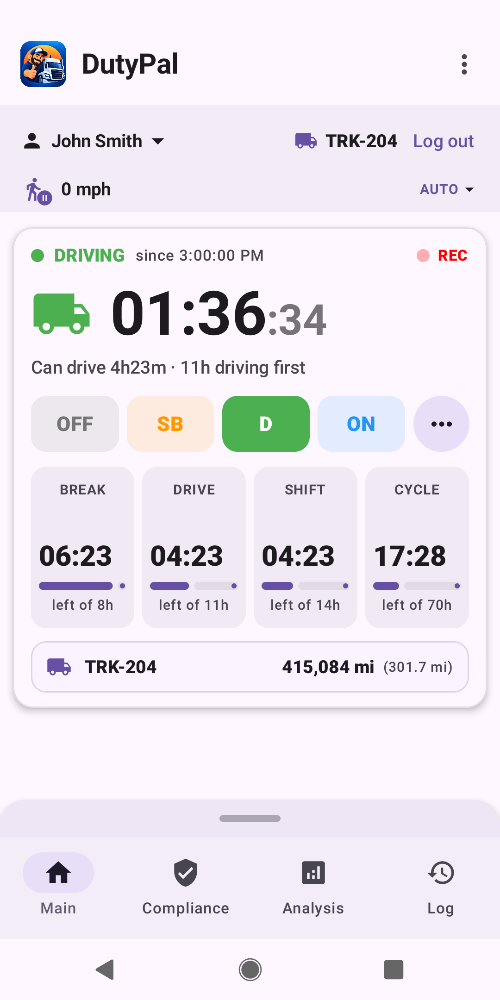
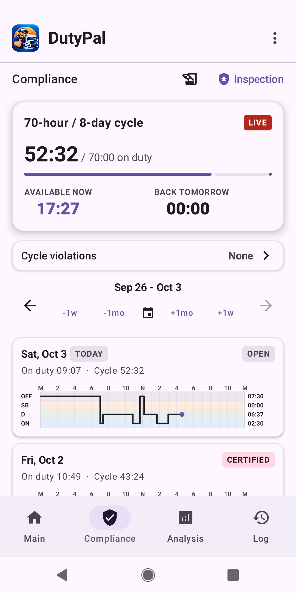
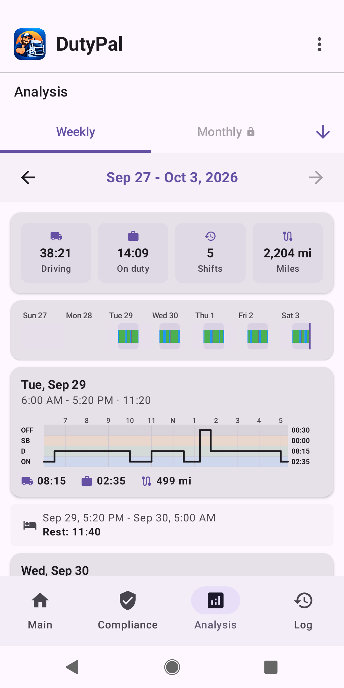
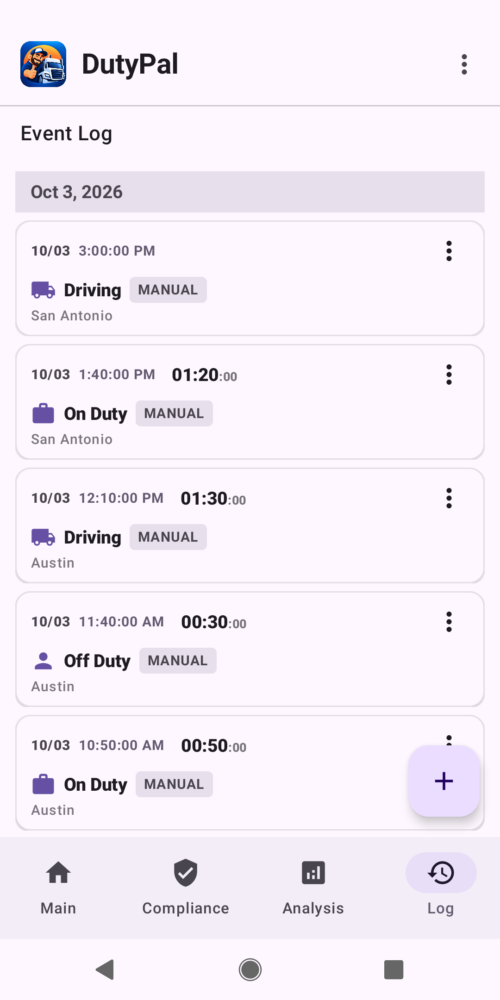
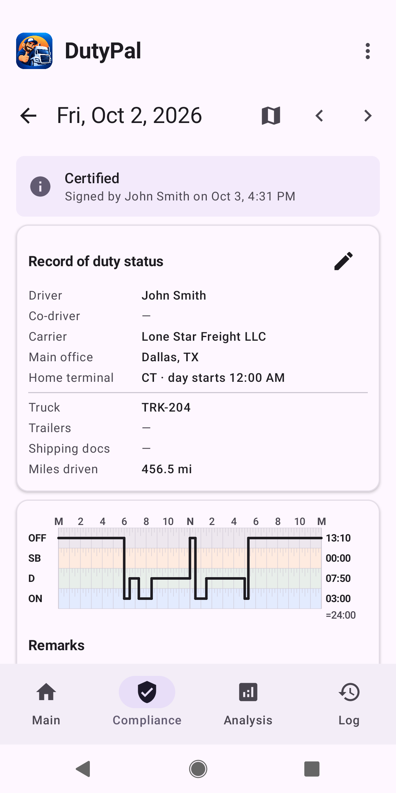
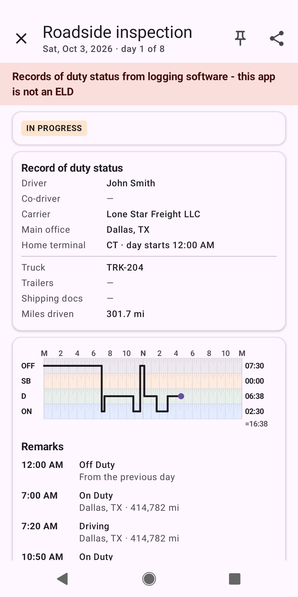

DutyPal
Your Hours of Service logbook assistant for US commercial drivers. See at a glance how much driving, shift and cycle time you have left.
DutyPal is not an Electronic Logging Device (ELD). Read the disclaimer.
First steps
New to DutyPal? A short guide takes you from installation to your first certified day and roadside inspection.
What DutyPal does

See what you have left, live
Switch between Off Duty, Sleeper Berth, Driving and On Duty with one tap, or let AUTO mode detect driving from your phone's location. Break, drive, shift and cycle clocks show your remaining time at a glance.

Cycle and compliance
Follow your 70-hour / 8-day cycle, see how much time is available now and tomorrow, check for violations and certify each day's log.

Weekly analysis
Driving time, on-duty time, shifts and miles for the week, with a daily graph and your rest periods between shifts.

Event log
Every duty status change in one list, with the place where it happened. Add or correct entries whenever you need to.

Record of duty status
A clear daily record with driver, carrier, truck, miles and the familiar grid graph. Certified days are marked as signed.

Roadside inspection mode
Show an officer the current day and the previous days in a clean read-only view, and share your records. Clearly marked: this app is not an ELD.
Also: short-haul tracking for the 150 air-mile exception, timely warnings before your limits run out, and PDF reports to share with your carrier.
Private by design
No accounts and no servers of our own. Your logs, profile and location history stay on your phone, and there is no advertising. See the Privacy Policy for details.
Questions?
Write to dutypal.support@gmail.com.